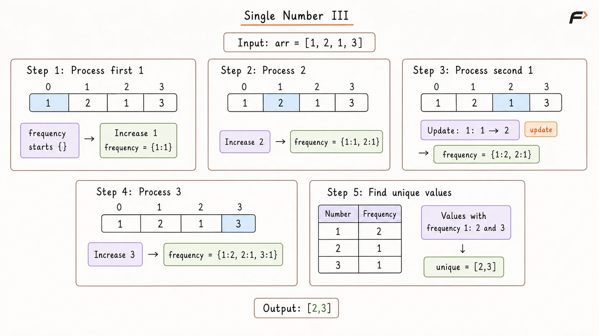
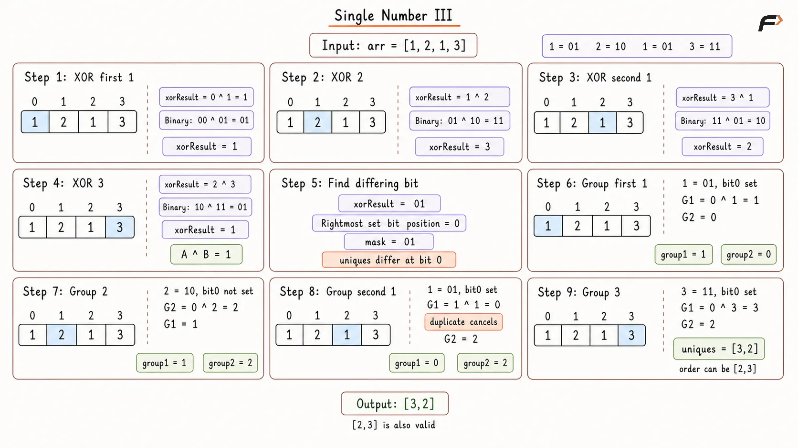

Single Number III
Given an integer array arr where every element appears exactly twice except for two elements that appear exactly once, return those two unique elements in any order.
Example 1
Input: arr = [1, 2, 1, 3, 2, 5]
Output: [3, 5]
Explanation: 1 and 2 appear twice, while 3 and 5 appear exactly once. [5, 3] is also a valid answer.
Example 2
Input: arr = [-1, 0]
Output: [-1, 0]
Explanation: Both values appear exactly once, so they are the two required elements.
Brute Force Appraoch
Since every repeated value appears exactly twice, we can count how often each number occurs.
A hash map stores every number with its frequency. After processing the array, the two values whose frequencies are 1 are the required unique elements.
This approach is easy to implement, but it requires additional space proportional to the number of distinct values.
Algorithm
Create a frequency map to store each array value and the number of times it appears.
Traverse
arrand increase the frequency of every value encountered.Create an answer list to store the two values that appear once.
Traverse the frequency map and check the occurrence count of each stored number.
If a number has frequency
1, add it to the answer because it is one of the two unique elements.Return the answer after both unique values are found.
Dry Run

Single Number III Brute Force Dry Run.png
Solution
#include <bits/stdc++.h>
using namespace std;
class Solution {
public:
vector<int> singleNumber(vector<int>& arr) {
/*
* Store each value with its occurrence count so
* the two elements appearing once can be identified.
*/
unordered_map<int, int> frequency;
for (int num : arr) {
frequency[num]++;
}
vector<int> answer;
for (auto& entry : frequency) {
if (entry.second == 1) {
answer.push_back(entry.first);
}
}
return answer;
}
};
int main() {
vector<int> arr = {1, 2, 1, 3};
Solution solution;
vector<int> answer = solution.singleNumber(arr);
for (int num : answer) {
cout << num << " ";
}
return 0;
}Complexity Analysis
Time Complexity: O(N) on average, because the array is traversed once to build the hash map and the stored entries are then checked once.
Space Complexity: O(N), because the frequency map may store O(N) distinct values.
Optimal Approach
If we XOR every value in the array, all numbers that appear twice cancel because:
x ^ x = 0
So the final XOR contains only the XOR of the two unique numbers:
xorResult = A ^ B
Since A and B are different, their binary representations must differ at least at one bit position. Therefore, A ^ B must contain at least one set bit.
Choose any set bit from xorResult and use it to divide the array into two groups:
numbers with that bit set,
numbers with that bit unset.
Both copies of every repeated number have identical bits, so they always enter the same group and cancel there. But A and B differ at the chosen bit, so they are forced into different groups.
XORing each group separately therefore leaves one unique number in each group.
Algorithm
Initialize
xorResult = 0and XOR every array element into it. Duplicate pairs cancel, leavingA ^ B.Find a set bit in
xorResult. This bit identifies a position where the two unique numbers differ.Use a sufficiently wide or unsigned mask representation so the sign bit can also be handled safely for negative integers.
Initialize
group1 = 0andgroup2 = 0to independently XOR the two groups.Traverse
arragain. Ifnum & maskis non-zero, XORnumintogroup1; otherwise, XOR it intogroup2.Return
group1andgroup2. Duplicate values cancel inside their respective groups, leaving the two unique values.
Dry Run

Single Number III Optimal Appraoch Dry Run.png
Solution
#include <bits/stdc++.h>
using namespace std;
class Solution {
public:
vector<int> singleNumber(vector<int>& arr) {
int xorResult = 0;
/*
* Duplicate pairs cancel, leaving the XOR
* of the two values that appear only once.
*/
for (int num : arr) {
xorResult ^= num;
}
/*
* Use unsigned arithmetic to safely isolate a set bit,
* including the sign bit when negative values are present.
*/
uint32_t bits = static_cast<uint32_t>(xorResult);
uint32_t mask = bits & (~bits + 1u);
int group1 = 0;
int group2 = 0;
/*
* The chosen bit differs between the two unique values.
* Equal pairs enter the same group and cancel there.
*/
for (int num : arr) {
if ((static_cast<uint32_t>(num) & mask) != 0) {
group1 ^= num;
} else {
group2 ^= num;
}
}
return {group1, group2};
}
};
int main() {
vector<int> arr = {1, 2, 1, 3};
Solution solution;
vector<int> answer = solution.singleNumber(arr);
cout << answer[0] << " " << answer[1] << endl;
return 0;
}Complexity Analysis
Time Complexity: O(N), because the array is traversed once to compute the combined XOR and once more to separate the values into two groups. Finding a set bit requires only a constant number of operations for fixed-width integers.
Space Complexity: O(1), because only a few variables are used and no additional data structure grows with the input size.
Interview follow-up Questions
Every duplicated value appears twice and cancels because x ^ x = 0. Only the two values appearing once remain, so the final XOR is A ^ B.